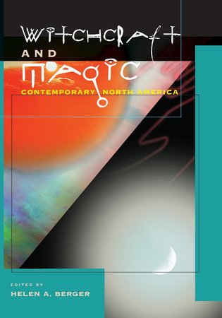

|
Solitary Pagans: Contemporary Witches Wiccans and Others Who Practice Alone
University of South Carolina Press, 2019
|
|
Teenage Witches: Magical Youth and the Search for the Self
with Douglas Ezzy
Rutgers University Press, 2007
|
|  |
Witchcraft and Magic: Contemporary North America
University of Pennsylvania Press, 2005
|
|
Voices from the Pagan Census: A National Survey of Witches and
Neo-Pagans in the United States
with Evan A. Leach and Leigh S. Shaffer
University of South Carolina Press, 2003
|
|
A Community of Witches: Contemporary Neo-Paganism
and Witchcraft in the United States
University of South Carolina Press, 1999
|